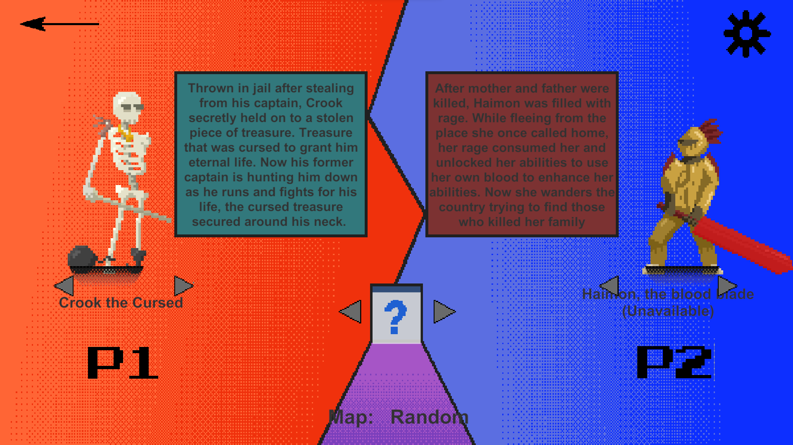

Blake Shea
Interactive Media and Computer Science at Clark University

Welcome! I'm Blake, a senior undergraduate at Clark University studying Compsci and Interactive Media with a focus on developing immersive XR (AR/VR) solutions that solve real problems. I'm currently open to both contract and full-time roles, so feel free to reach out to me through my email, blakeivorshea@gmail.com, or through other platforms below.
Languages
Python, C#, Java, HTML/CSS
Frameworks
Unity Game Engine, Django, FastAPI, OpenCV, Ollama, Tkinter
Deployment tools
AWS EC2, Docker, Uvicorn
Development tools
Github, Git, PlasticSCM (Unity Version Control), Figma,
Visual Studio, Visual Studio Code, WSL, N8N
Featured Projects
Downfall - 2025
Gameplay Programmer
"Downfall" is a 2D mining game submitted to Clark University's 48 hour February Frenzy Game Jam 2025. I developed a scalable block mining system using scriptable objects and level generation system to progressively challenge the player with new blocks and enemies.
ArcadiaAR - 2024 (Avilaar, Inc.)
AI Pipeline Programmer
ArcadiaAR is an interactive chat AR reading app that allows players to converse with AI avatars about aspects such as character and theme. I co-developed the AR application and created a real-time chat server for the conversations using Python and FastAPI.
Ghost Juke - Summer 2024
(Studio Blue Jay)
Gameplay Prototyping
Ghost Juke is 2D "emotional" rhythm game and Studio Blue Jay's current working title set to release on steam in late 2025. As part of the crew during Summer 2024, I created the initial playable prototype in Unity that was used to pitch the game at local indie events and designed the layout of the main gameplay interaction that is used to this day.
Starbound Wanderers - Spring 2024
(Studio Blue Jay)
Gameplay Programmer
Starbound Wanderers is a top-down isometric narrative game developed by Studio Blue Jay, marking the studio's debut title. I programmed the node-based narrative system using existing Unity tools, LUA, and C#. I also created the enemy and player combat using my own custom A* pathfinding system that integrated queues, threading, and frame optimization to remove visible stutters.

Dungeons and Dragons Inventory (2024)
Web Developer
Dungeons and Dragons Inventory is an interactive webapp that I made with my peers that streamlines item storage system of the tabletop role-playing Dungeons & Dragons. I used the python based web framework django to create views, pages, and CRUD operations for the application, as well as styling and forms with HTML and CSS.

Bellicose (2024)
Gameplay Programmer
Bellicose is a 2D local multiplayer PVP game submitted to Clark University's 48-hour February Frenzy Game Jam 2024. I implemented a working scalable state machine combat system including attacks, parries, dashes, specials, high/low abilities, and more.